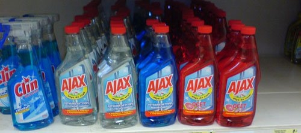
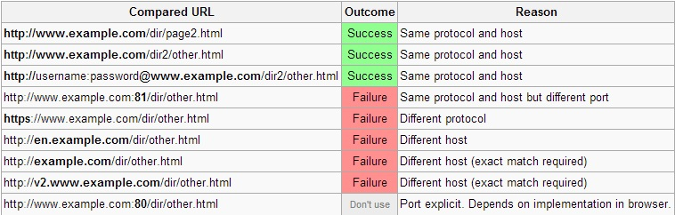

Ajax
What is Ajax?
What is Ajax?
What is Ajax?
Asynchronous JavaScript and XML
is a group of interrelated web development techniques used on the client-side to create asynchronous web applications.
The term Ajax was coined on 18 February 2005 by Jesse James Garrett in an article entitled "Ajax: A New Approach to Web Applications", based on techniques used on Google pages.
Asynchronous JavaScript and XML
- uses XML to send and receive data
- performs asynchronous requests/responses
- leverages presentation technologies(JavaScript, HTML, CSS) to process the response
All browsers now support the necessary techologies for Ajax
In other words
Ajax enables you to execute a server-side methods through a JavaScript call, whithout requiring a browser refresh.
History of Ajax
- March 1999: Internet Explorer 5 (ActiveX "Microsoft.XMLHTTP")
- Late 1999: Mozila adoptes the feature (XMLHttpRequest)
- April 1, 2004: Gmail
- February 2005: Jesse James Garrett of Adaptive Path described new tactic in an essay (Ajax: A New Approach to Web Applications)
- Late 2005: client-side libraries and server-side support for ASP.NET
- April 5, 2006: XMLHttpRequest 1.0 w3c working draft
- February 25, 2008: XMLHttpRequest 2.0 W3C working draft
How to
XMLHttpRequest
JavaScript object.
Adopted by all browsers
Communicates with a server via standard HTTP GET, POST, PUT and DELETE
XMLHttpRequest object works in the background for performing asynchronous communication with the backend server
XMLHttpRequest
Response content type can be:
- text/xml
- text/plain
- text/json
- text/javascript
Ajax with response type text/json is AJAJ
XMLHttpRequest
Properties:
- onreadystatechange
Set with an JavaScript event handler that fires at each state change
- readyState
current status of request
- 0 = uninitialized
- 1 = loading
- 2 = loaded
- 3 = interactive (some data has been returned)
- 4 = complete
- status
HTTP Status returned from server: 200 = OK
XMLHttpRequest
Properties:
- responseText
String version of data returned from the server
- responseXML
XML document of data returned from the server
- statusText
Status text returned from server
XMLHttpRequest
Methods:
- Open()
open( method, URL )
open( method, URL, async )
open( method, URL, async, userName )
open( method, URL, async, userName, password )
- send(data)
- abort()
- setRequestHeader(name, value)
Example:
function doCompletion(word, callback, errorback) {
var url = "autocomplete?action=complete&id=" + escape(word);
var req = initRequest(url);
req.onreadystatechange = function() {
if (req.readyState == 4) {
if (req.status == 200) {
callback(JSON.parse(req.responseText));
} else {
errorback(req.statusText);
}
}
};
req.open("GET"/*type*/, url/*url*/, true/*async*/);
req.send(null);
};Example:
function doCompletion(word, callback, errorback) {
var url = "autocomplete";
var req = initRequest(url);
req.onreadystatechange = function() {
if (req.readyState == 4) {
if (req.status == 200) {
callback(JSON.parse(req.responseText));
} else {
errorback(req.statusText);
}
}
};
req.open("POST"/*type*/, url/*url*/, true/*async*/);
req.setRequestHeader('Content-Type', 'application/x-www-form-urlencoded')
req.send("action=complete&id=" + escape(word));
};Example:
function initRequest() {
if (window.XMLHttpRequest) {
return new XMLHttpRequest();
} else if (window.ActiveXObject) {
isIE = true; // IE5 — IE6
return new ActiveXObject("Microsoft.XMLHTTP");
}
};jQuery - Ajax
$.ajax({
type: 'POST',
url: 'echo',
data: { testingMethod: 'Get' },
success: function(resp) {
var responseContainer = document.querySelector(".response");
responseContainer.innerText = JSON.stringify(resp);
}
});
jQuery Ajax shorthands:
- jQuery.get()
Load data from the server using a HTTP GET request
$.get( "test.php", { name: "John", time: "2pm" } ) .done(function( data ) { alert( "Data Loaded: " + data ); }); }); - jQuery.post()
Load data from the server using a HTTP POST request.
$.post( "ajax/test.html", function( data ) { $( ".result" ).html( data ); }); - .load()
Load data from the server and place the returned HTML into the matched element.
$( "#result" ).load( "ajax/test.html #container" );
jQuery Ajax shorthands:
- jQuery.getJSON()
Load JSON-encoded data from the server using a GET HTTP request.
var flickerAPI = "http://api.flickr.com/services/feeds/photos_public.gne?jsoncallback=?"; $.getJSON( flickerAPI, { tags: "mount rainier", tagmode: "any", format: "json" }) .done(function( data ) { $.each( data.items, function( i, item ) { $( "" ).attr( "src", item.media.m ).appendTo( "#images" ); if ( i === 3 ) { return false; } }); });
- jQuery.getScript()
Load JSON-encoded data from the server using a GET HTTP request.
$.getScript( "ajax/test.js", function( data, textStatus, jqxhr ) { console.log( data ); // Data returned console.log( textStatus ); // Success console.log( jqxhr.status ); // 200 console.log( "Load was performed." ); });
Same Origin Policy
Same Origin Policy
The policy permits scripts running on pages originating from the same site – a combination of scheme, hostname, and port number – to access each other's DOM with no specific restrictions, but prevents access to DOM on different sites.
Same-origin policy also applies to XMLHttpRequest and to robots.txt.
Read moreSame Origin Policy
"http://www.example.com/dir/page.html"
JSONP
JSONP
JSON with padding
is a communication technique used in JavaScript programs running in web browsers to request data from a server in a different domain, something prohibited by typical web browsers because of the same origin policy.
Example:
// Object to fetch
{
"Name": "Foo",
"Id": 1234,
"Rank": 7
}
// Response with padding
parseResponse({"Name": "Foo", "Id": 1234, "Rank": 7});CORS
CORS
Cross-origin resource sharing.
is a mechanism that allows JavaScript on a web page to make XMLHttpRequests to another domain, not the domain the JavaScript originated from.
HTTP access control (CORS)
CORS request flow
-
XMLHttpRequest level 2
February 25, 2008: XMLHttpRequest 2.0 W3C working draft
- HTTP OPTIONS
-
Headers
-
Origin: http://www.example-social-network.com
Request
-
Access-Control-Allow-Origin: http://www.example-social-network.com
(Access-Control-Allow-Origin: *)
Response
-
Origin: http://www.example-social-network.com
-
XDomainRequest degradation
IE8 and IE9
Only GET and POST
Request headers:
-
Origin
Indicates the origin of the cross-site access request or preflight request.
-
Access-Control-Request-Method: POST
Used when issuing a preflight request to let the server know what HTTP method will be used when the actual request is made.
-
Access-Control-Request-Headers: X-PINGOTHER
Used when issuing a preflight request to let the server know what HTTP headers will be used when the actual request is made.
Response headers:
-
Access-Control-Allow-Origin: http://foo.example
The origin parameter specifies a URI that may access the resource.
-
Access-Control-Allow-Methods: POST, GET, OPTIONS
Specifies the method or methods allowed when accessing the resource. This is used in response to a preflight request.
-
Access-Control-Allow-Headers: X-PINGOTHER
Used in response to a preflight request to indicate which HTTP headers can be used when making the actual request.
-
Access-Control-Max-Age: 1728000
This header indicates how long the results of a preflight request can be cached. For an example of a preflight request, see the above examples.
- Access-Control-Allow-Credentials
Push notifications
Push notifications
Push, or server push, describes a style of Internet-based communication where the request for a given transaction is initiated by the publisher or central server. It is contrasted with pull, where the request for the transmission of information is initiated by the receiver or client.

Comet
Techniques:
- Polls
Frequent requests for notifications to the server
- Long polling
The same as polls but the connection stays open until it gets a new notification
- Hidden iframe
Iframe with opened connection which is updated by the server with script tags
- "multipart/x-mixed-replace."
Gecko-based browsers only!
- Web-sockets
Pros
- Faster web actions
- Intuitive and natural user interaction
- Less (or no) page refreshes
- Reduce network traffic
- Separation of displaying from data fetching
- Partial screen update
Cons
- Buy Buy, bookmarks
- Search engines may not be able to index all pages
- Inaccurate Back and Forward button actions
- Requires much more complicated JavaScript (dom update, visual feedback, memory managment)